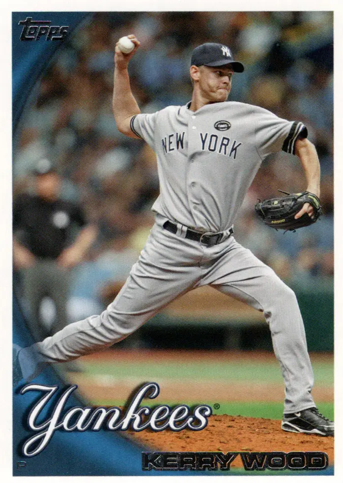

Kerry Wood "Kid K"
Career Highlights & Facts
(Facts are AI-generated and may require verification)
- Tied the major league record by striking out 20 batters in a single 9-inning game.
- Earned Rookie of the Year honors after a dominant debut season.
- Retired from professional baseball after striking out the final batter faced in a career-ending appearance.
Would you like to find out more about Kerry Wood?
Player Biography
Kerry Wood June 22, 2020 / in BioProject - Person Rookie of the Year 2000s All-Stars / by admin This article was written by Steve Dunn In only his fifth start in the major leagues, 20-year-old Kerry Wood turned in a pitching performance for the ages on May 6, 1998. Under cloudy, drizzly skies, the Texas native struck out 20 Houston Astros at Wrigley Field and allowed only one hit–a single off Cubs third baseman Kevin Orie ’s glove in the top of the third inning. Twenty years later, Chicago Baseball Museum historian George Castle rated Wood’s masterpiece against the then defending National League Central champions “the most dominating [game] in history.” 1 Others concur. “Experts rated it as the most dominant pitching performance of the twentieth century,” author Peter Golenbock noted in his 1999 history of the Cubs. 2 However, the strapping 6-foot-5 right-hander missed the entire 1999 season due to Tommy John surgery in April 1999 after earning NL Rookie of the Year honors in ’98. After being called up from Triple-A Iowa in early April 1998, Wood compiled a 13-6 record with 233 strikeouts in 166 2/3 innings. After undergoing shoulder surgery in 2005, Wood eventually reinvented himself as a relief pitcher and saved 34 games for the Cubs in 2008. After two years with the Cleveland Indians and New York Yankees (where he set up games for Hall of Fame closer Mariano Rivera ), Wood returned to Chicago’s North Side. His 14-year big league career came to a noteworthy end on Friday, May 18, 2012, when he struck out the only batter he faced in the eighth inning during the Cubs 3-2 loss to the Chicago White Sox. Kerry Lee Wood was born on June 16, 1977, in Irving, Texas, one of two sons of Garry and Terry Wood. His father, who was a left-handed-hitting shortstop in his younger days, worked for a check-printing company; his mother was employed by an insurance agency. 3 Kerry and his brother spent most of their free time on the baseball field. Their father often coached his sons; their mother kept score at their games. When they weren’t playing, Kerry and his older brother Donny could be seen around their dad’s softball team. 4 In Little League, Kerry played shortstop and pitched. Kerry started at shortstop as a 5-foot-9 freshman at MacArthur High School in Irving. He volunteered when he heard that the junior varsity coach was looking for pitchers. When he showed up for spring practice in 1993, he had grown six inches and had started to model major league pitching greats Nolan Ryan and Roger Clemens on the mound. 5 In 1991-92 Wood played on MacArthur High’s freshman basketball team. With Wood on the mound in the spring of ’92, the school’s junior varsity baseball team finished 8-9-1, losing twice to Grand Prairie High School in Grand Prairie, Texas. Wood reached MacArthur’s varsity baseball team by his sophomore year. Although it finished 4-10 overall, the pitching staff cut its earned run average from 4.70 to 3.40. That season, Wood played with his brother, who was a senior, on MacArthur’s varsity baseball team. In his junior year Wood matched up against Texas’ best player, Ben Grieve , a Martin High School senior. Although Grieve struck out in his first at-bat, Grieve got even in his third at-bat with a long homer on a 2-2 count. 6 Wood finished that season with a 2-5 record and 1.89 ERA even though the MacArthur squad went 6-17 overall and 3-10 in the district. “[Junior] Kerry Wood turned heads with his 90-mph fastball and ‘wild thing’ pitching style,” the school’s yearbook staff writer David Burns said. 7 Not only did Wood earn first team all-district pitching honors, but also he attended the Atlanta Braves tryout on June 9 that summer. Now on baseball scouts radar, Wood compiled a 14-0 record with a 0.77 ERA after transferring to Grand Prairie High School in his senior year of high school. He also struck out 152 batters in 81⅓ innings, or almost two per inning. The Cubs selected Wood in the first round of the 1995 major league amateur draft behind Darin Erstad , the California Angels No. 1 pick; Ben Davis , the San Diego Padres No. 2 pick; and Jose Cruz Jr. , the Seattle Mariners No. 3 choice. However, two days before the draft, Wood threw 175 pitches in a doubleheader for Grand Prairie High School. Then Wood underwent a series of tests after the Cubs became concerned about their draftee’s workload. Convinced that Wood was healthy, they gave him a $1.2 million signing bonus. Wood rose through the Cubs minor league system quickly, starting his second full season in Double-A Orlando before advancing to Triple-A Iowa. He had a combined record of 10-9 with a 4.57 ERA in 29 starts. Although he struck out 186 in 151⅔ innings, he also walked 131. After starting the 1998 season at Iowa, Wood was recalled a few days later and made his MLB debut on April 12 against the Montreal Expos at Olympic Stadium . Wood was tagged with the loss, giving up four earned runs in 4⅔ innings while striking out seven and issuing three walks. Six days later he recorded his first major league win, hurling five shutout innings and allowing only four hits in a five-inning start against the Los Angeles Dodgers at Wrigley Field . Fast forward to May 6 of that season when he tied the MLB record for strikeouts in a game. Reluctant to talk about himself, Wood said afterwards, “There’s no way I could have imagined doing anything like this. I was just trying to win the game. I was getting all of my pitches over, and the strikeouts kept coming. I don’t think it’s set in yet. I’m still a little in awe.” 8 Wood struck out the side four of the nine innings he pitched that historic day in May. He missed setting the record at 21 Ks at it turned out when the second-to-last Astro batter, Craig Biggio , grounded out to short to first. The last Astro hitter, Derek Bell , fanned. In tying the MLB record with his 20 strikeouts, he became only the second major leaguer to match his age in Ks. Bob Feller of the Cleveland Indians first accomplished the feat as a 17-year-old in 1936. 9 Both managers were suitably impressed that day. Cubs skipper Jim Riggleman said, “There’s no one in the National League who has a better arm. That game was one for the memory banks. The best I’ve ever seen pitched by anybody.” 10 Astros manager Larry Dierker , who pitched a no-hitter during his playing days, said, “He reminded me of the first time I saw Nolan] Ryan. He’s going to pitch a no-hitter and maybe a few no-hitters. His stuff is the real item.” 11 “It’s extremely rare for a rookie to join a team and become the staff’s ace. It’s rarer for that pitcher to put up numbers that compare him to Hall of Famers,” author Golenbock wrote. “It took Walter Johnson four seasons to dominate, Steve Carlton and Nolan Ryan six, and Sandy Koufax seven. All struck out far more batters than their innings pitched.” 12 In his next start Wood struck out 13 Arizona hitters in seven innings to set a new back-to-back nine-inning game MLB record of 33. If that wasn’t enough, on August 26 he fanned 16 batters and surrendered only three hits and two runs in eight innings against the Cincinnati Reds. He missed all of September, however, with a ligament problem in his pitching elbow. While the Cubs finished 90-73 and lost to the Atlanta Braves 3-0 in the NL Division Series, Wood’s magical year was overshadowed by the league MVP Sammy Sosa , who clobbered 66 homers, drove in 158 runs and hit .308 with a 1.024 OPS. In his only playoff start, Wood gave up one run and three hits in five innings. “We weren’t going to let him get hurt out there [in the playoffs] so we weren’t going to let him throw any curves and risk it,” manager Riggleman said. “It was strictly fastballs and sliders and changeups.” 13 When the Cubs opened the season against the New York Mets in Japan on March 29-30, 2000, Wood was throwing fastballs, sliders, and changeups during a minor league game at the Cubs spring training complex in Arizona. He didn’t make his first major league start that season until May 9 against Houston, giving up one earned run and three hits for his first win since 1998. “I’m sure I’ll have some nerves going. The first inning of every game I’ve pitched so far [in rehab assignments], I’ve had a little bit of butterflies, so I don’t expect anything to change from that aspect,” he said before facing the Astros. 14 Wood spent nearly a month on the disabled list with a strained oblique muscle that season, but managed to “reach 97 miles per hour, get his curveball over and have control of his slider and changeup [at Cincinnati September 12],” sportswriter Bruce Miles noted. “He showed he can dominate without trying to blow hitters away.” 15 In 2001 the Cubs got off to a 27-20 start as Wood one-hit the Milwaukee Brewers on May 25. The 23-year-old flame thrower lost a no-hitter when Mark Loretta led off the top of the seventh inning with a single to left field. Facing just 30 batters, Wood struck out 14 and issued two walks in his nine-inning gem. In August, however, he came down with shoulder tendinitis, finishing 12-6 with 217 strikeouts and 92 walks in 174⅓ innings. Cub pitchers set a major league record that season with 1,344 Ks. Wood also won 12 games and struck out 217 hitters the next season as the Cubs were led by three managers ( Don Baylor , Rene Lachemann and Bruce Kimm ) and posted a 67-95 record. After the All-Star break that season, Wood added a slider to his repertoire. Sportswriter Miles reported that Wood “is not concerned about the stress the pitch puts on his elbow because his mechanics are sound and he’s not throwing across his body.” 16 Going into 2003 Miles claimed the Cubs phenom “has it all–a great fastball, curve, and changeup, plus improving control.” 17 Not only that, but also Wood had opening day stuff on the first day of live batting practice in spring training, according to catcher Damian Miller . 18 By mid-season, however, Wood was averaging 112.8 pitches per start, the sixth highest in the majors. 19 While the 1998 season ranks as Wood’s finest in author Robert Cohen’s estimation, Cohen says the 2003 campaign is a close second. 20 The young Texan was chosen for the All-Star Game for the first time and established career highs in wins (14), ERA (3.20), complete games (four), shutouts (two) and strikeouts (a league-leading 266). On April 12 Wood struck out 13 Pirates and gave up only three hits in a 4-0 win. In a no-decision May 15, he fanned 13 Brewers and allowed three hits over seven shutout innings. Then on June 6 Wood matched up against the Yankees Roger Clemens, the only other man at time to strike out 20 in a nine-inning game. All Wood did was beat Clemens and the Yankees, 5-2, striking out 11 batters and giving up only three hits and one run in 7 2/3 innings. His dominance continued into the NL Division Series that season, garnering wins in the first and fifth games of the series against the Atlanta Braves. In his team’s 4-2 win in Game One, Wood collected 11 strikeouts and allowed only two runs and two hits in 7⅓ innings. In the clincher he surrendered only one run and five hits over eight innings. Even though Wood wasn’t able to protect an early 5-3 lead in the seventh game of the NLCS that season, he experienced what he called “my most memorable moment in baseball” in the second inning when his two-run homer tied the score at 3-3. 21 A fair hitter, he had seven homers and 32 RBIs in only 346 official at-bats during his major league career. The 2003 campaign proved to be his last season as a full-time starter. He missed almost two months of the 2004 season with strained triceps as he made 22 starts and finished 8-9. In 2005, he made 10 starts and pitched only 66 innings. He made only four starts the next two seasons, which were interrupted by a sore shoulder, partially-torn rotator cuff, and a knee ailment that required surgery. “Nevertheless, displaying the fortitude and competitive spirit that once helped make him one of baseball’s most highly-touted prospects, Wood returned to the Cubs in 2008, this time as a reliever,” Cohen says. 22 On April 23 of that season, Wood picked up the win after blowing the save as the Cubs recorded their 10,000th win in franchise history. Earning his second All-Star selection, Wood saved 34 games (fourth in the NL) and struck out 84 batters in 66⅓ innings. A free agent at the end of ’08, Wood signed a two-year, $20 million deal with the Cleveland Indians on December 10 that year. “I’m not sure there was anyone [else] available who we would want to pitch the ninth inning for us,” said Indians general manager Mark Shapiro. “He fits our culture perfectly. We get the best of both worlds with Kerry. He has a gifted arm and is a great guy and a great fit in our clubhouse.” 23 On April 15, 2009, Wood earned the save in his first save opportunity for the Indians, who beat the Kansas City Royals, 5-4, in Kansas City. “I was glad to get those three outs, but it was more important for us to win,” Wood said afterwards. 24 Three months later in Toronto he picked up his 13th save in 17 chances as the Indians won a series for the first time since July 3-5. However, his return to Wrigley Field in June that year was memorable for all the wrong reasons. On June 20 he blew a save for the second straight day–on a wild pitch this time–and the Indians lost in 13 innings to his former team. Wood was inconsistent through late August of 2009, despite being healthy all season for the first time in six years. At that point Kid K had converted 15 of 20 save opportunities with a 4.81 ERA in 46 games. “It’s been tough for him to get consistent save opportunities,” said manager Eric Wedge who saw his team finish 65-97 that season. 25 The season ended on a high note though as Wood recorded his 19th save in 24 tries with a perfect ninth inning on September 6 against the Minnesota Twins. The injury bug hit Wood again before 2010 even started. A strained muscle in his upper back during spring training put him on the disabled list for the 13th time in his career. He was activated on the May 7 after making two rehab appearances for Double-A Akron. However, he went back on the DL in mid-July with a blister on his right index finger. At the time, the former Cub had a 1-4 record with a 6.30 ERA and eight saves. Wood got a new release on life when the Indians traded him to the New York Yankees on July 31, 2010, for two players to be named later. “The whole purpose of the deal when it was consummated was to dump Wood’s salary, some of which was reallocated to help sign some of their 2010 draft picks,” explained sportswriter Tony Lastoria. 26 Then on October 21 the Yankees sent two “very fringy prospects,” Andrew Shive and Matt Cusick, and $3 million to the Tribe to complete the deal. 27 As a set-up man for the Yankees, Wood had a 2-0 record with a .69 ERA in 24 games and 26 innings. He pitched in three games during the ALDS versus the Twins and four games in the ALCS against the Rangers. Wood returned to his roots on the north side of Chicago as a free agent on December 17, 2010, on a one-year, $1.5 million contract. In doing so, he turned down a one-year, $3.5 million offer by the crosstown White Sox. 28 Why did he want to return to Chicago? “It’s everything. It’s the city. Obviously, it’s the place I worked for so long, the neighborhood, just the people,” he said. “I got drafted when I was 17, signed when I was 18. I was up there at 20, and now, I’m raising my kids in the city.” 29 Pitching in 55 games in 2011, he got into 10 games the next and final season before deciding to retire voluntarily. He went out with a bang though. With rumors circulating on Friday, May 18, 2012, that Wood might retire, the Cubs hoped to get him into one last game so he could enjoy the fans’ adulation. “They wanted him to ride off into the sunset on his own terms,” sportswriter Miles observed. 30 With one out in the eighth inning and Adam Dunn on first base, acting manager Jamie Quirk came out of the dugout to get starter Cubs starter Jeff Samardzija . (Manager Dale Sveum had been ejected earlier.) As 34,937 fans cheered, Wood retired Dayan Viciedo on a curve ball and then was removed by Quirk. When Wood got near the third base dugout, his six-year-old son, Justin, ran out and hugged his dad. Wood and his wife, Sarah, have two other children, Katie and Charlie. Afterward, Wood said the feeling was like that of his 1998 masterpiece. “I told [pitcher James] Russell before I went in, ‘I feel like I’m going in to pitch my first inning.’ So the adrenaline’s the same. The nerves were the same. I just can’t give enough credit to the fans.” 31 When interviewed in April, Wood said, “I didn’t know he [his son] was going to come out [of the dugout onto the field]. I have great pictures of it.” 32 After numerous injuries throughout his career, it was time to retire. “It’s just time,” he said after facing his last batter. “Just the grind of getting ready every day, to go through it, just to get ready for 15 pitches and go out and not be successful. It was time.” 33 He also expressed appreciation for his Cub teammates and the fans. “I’ll miss being around the guys. I’ll miss the competition. I’ll remember the great times. I’ve spent half my life in this organization. In this ballpark with these fans. I’ve been very lucky,” he said. 34 Overall, Wood had an 86-75 record and a 3.67 ERA with 1,582 strikeouts, five shutouts and 63 saves. His Cub record was 80-68 with a 3.67 ERA, 1,470 strikeouts, five shutouts and 35 saves. When he retired he had a strikeouts-per-nine-innings-pitched ratio of 10.317, second only to Randy Johnson’s 10.610. He holds the Cubs record for most strikeouts per nine innings pitched (12.582 in 1998). He ranks among the team’s career leaders in strikeouts (third), strikeouts per nine innings pitched (first), and opponent’s batting average (second). “Plenty of pitchers had better records with the Cubs than Wood, but none captured the imagination of the fandom like he did,” Miles said. 35 In July 2011 Wood and his wife announced the formation of a new locally-based charitable foundation, the Wood Family Foundation. The board includes the Woods as well as Tom Ricketts, chairman of the Chicago Cubs. The foundation’s after-school program, Pitch In, serves nearly 150 students at Lawndale Community Academy, Richard Yates Elementary School, Bernard Moos Elementary School, and Charles Sumner Math and Science Community Academy in Chicago. “Looking ahead, we are charting an inspiring, strategic path toward serving 10 Chicago school communities by 2022,” the foundation’s website says. “We will continue to serve the North Lawndale and Humboldt Park neighborhoods and aspire to grow to Austin and Englewood in the years ahead.” 36 Kerry’s wife Sarah was diagnosed with Stage 1 breast cancer in February 2015 and underwent bilateral mastectomy. Today, she is considered a breast cancer survivor. She and Kerry met in 2000 at Cactus, a small bar and grill in Chicago, when she was going to school and working at the establishment. He was 22 at the time; she was 21. The couple was married in Hawaii in 2002. Last summer, Sarah graduated from Northwestern University in Evanston, Illinois, with a Bachelor of Science degree in organizational behavior and a minor in business. Asked if he’d like to see his children become pro athletes someday, he said, “I’d encourage them to do whatever makes them happy. I don’t push them to play sports. They have other passions as well.” 37 For fun, he said, he likes to play golf and take his boat out on Lake Michigan during the summer. He still attends Opening Day and about four to six Cub games a season plus playoff games. He serves as a special assistant to Cubs President of Baseball Operations Theo Epstein and has helped at spring training in the past. As for his own injury-riddled career that included 16 times on the disabled list, Wood has no regrets. “I got to start for a while and come back from some injuries. I got to close for a couple years. I got to set up for Mariano Rivera, which was pretty cool,” he said. “So I feel like I’ve had a great career. It’s had its ups and downs, sure. But when it’s all said and done, my son can look back and say, ‘You know what? He didn’t quit. He didn’t give up when a lot of guys could have.’ So maybe that means something.” 38 Last revised: June 22, 2020 Acknowledgments The author is indebted to archivist Chris Strange with the City of Irving/Irving Archives and Museum in Irving, Texas, for his assistance. This biography was reviewed by Paul Doutrich and David H. Lippman and fact-checked by David Kritzler. Sources In addition to using baseball-reference.com and baseballalmanac.com, the author used retrosheet.org, newspaperarchive.com, paperofrecord.com, chicagobaseballmuseum.org, jockbio.com, wffpitchin.org., and pointsoflight.org. Notes 1 George Castle, “Wood’s 20-K masterpiece tense to cover as baseball scribe,” https://chicagobaseballmuseum.org/tag/kerry-wood/ , accessed February 9, 2020. 2 Peter Golenbock, Wrigleyville: A Magical History Tour of the Chicago Cubs (New York: St. Martin’s Griffin, 1999), 507. 3 Kerry Wood, https://www.jockbio.com/Bios/Wood/Wood_bio.html , accessed December 26, 2019. 4 Kerry Wood, https://www.jockbio.com/Bios/Wood/Wood_bio.html . 5 Kerry Wood, https://www.jockbio.com/Bios/Wood/Wood_bio.html . 6 Kerry Wood, https://www.jockbio.com/Bios/Wood/Wood_bio.html . 7 David Burns, ”Struck out Swinging,” 1994 MacArthur High School yearbook, 137. 8 Golenbock, Wrigleyville: A Magical History Tour of the Chicago Cubs , 507. 9 Frederick C. Bush, “Kerry Wood Whiffs 20 To Tie MLB Record,” Wrigley Field–The Friendly Confines At Clark And Addison (Phoenix: Society for American Baseball Research, Inc.), 270. 10 Bush, “Kerry Wood Whiffs 20 To Tie MLB Record,” 270. 11 Bush, “Kerry Wood Whiffs 20 To Tie MLB Record,” 270. 12 Golenbock, Wrigleyville: A Magical History Tour of the Chicago Cubs , 506. 13 Barry Rozner, “Chicago,” The Sporting News , October 19, 1998, 62. 14 Jimmy Greenfield, “Wood’s elbow appears fine–just don’t ask him how he feels,” The Sporting News , May 15, 2000, 19. 15 Bruce Miles, “Tapani’s injury puts starters at the top of the wish list,” The Sporting News , September 25, 2000, 23. 16 Bruce Miles, “Chicago,” The Sporting News , August 19, 2002, 26. 17 Bruce Miles, “Chicago Cubs, “ The Sporting News , January 20, 2003, 55. 18 Ken Rosenthal, “Inside Dish,” The Sporting News , March 3, 2003, 53. 19 “Splittsville,” The Sporting News , July 7, 2003, 57. 20 Robert Cohen, The 50 Greatest Players in Cubs History (Indianapolis: Blue River Press, 2017), 323. 21 Cohen, The 50 Greatest Players in Cubs History, 326. 22 Cohen, The 50 Greatest Players in Cubs History , 322. 23 Chris Assenheimer, “Tribe looks to Chicago for help in key areas,” Sandusky (Ohio) Register , April 5, 2009, B1, B6. 24 Sheldon Ocker, “Laffey shows he deserves a spot,” Ashtabula (Ohio) Star-Beacon , C3. 25 Chris Assenheimer, “Wood failing to meet expectations,” Sandusky (Ohio) Register , August 23, 2009, B4. 26 Tony Lastoria, “Wood-n’t you know it?” Ashtabula (Ohio) Star-Beacon , October 24, 2010, C2. 27 Lastoria, “Wood-n’t you know it?” C2. 28 Mike Spellman, “Wood coming back to Cubs,” Arlington Heights (Illinois) Daily Herald , Section 2, 2. 29 Bruce Miles, “Comfortable conclusion,” Arlington Heights (Illinois) Daily Herald , February 21, 2011, Section 2, 3. 30 Bruce Miles, “Kid K calls it quits,” Arlington Heights (Illinois) Daily Herald , May 19, 2012, Section 2, 1. 31 Miles, “Kid K calls it quits,” Section 2, 1. 32 Kerry Wood, telephone interview, April 2, 2020. 33 Miles, “Kid K calls it quits,” Section 2, 1. 34 Barry Rozner, “This time, Kerry Wood found perfection,” Arlington Heights (Illinois) Daily Herald , May 19, 2012, Section 2, 3. 35 Bruce Miles, “A strange love affair,” Arlington Heights (Illinois) Daily Herald, May 20, 2012, Section 2, 1. 36 Wood Family Foundation, https://www.wffpitchin.org/ , accessed March 16, 2020. 37 Kerry Wood, telephone interview. 38 Miles, “Comfortable conclusion,” Section 2, 3. Full Name Kerry Lee Wood Born June 16, 1977 at Irving, TX (USA) Stats Baseball Reference Retrosheet If you can help us improve this player’s biography, contact us . Tags Rookie of the Year · 2000s All-Stars · Share this entry Share on Facebook Share on X Share on LinkedIn Share on Reddit Share by Mail
Career Totals
| WAR | W | L | ERA | G | GS | SV | IP | SO | WHIP |
|---|---|---|---|---|---|---|---|---|---|
| 27.6 | 86 | 75 | 3.67 | 446 | 178 | 63 | 1380.0 | 1582 | 1.267 |
Statistics via Baseball-Reference.com
The Original Clue